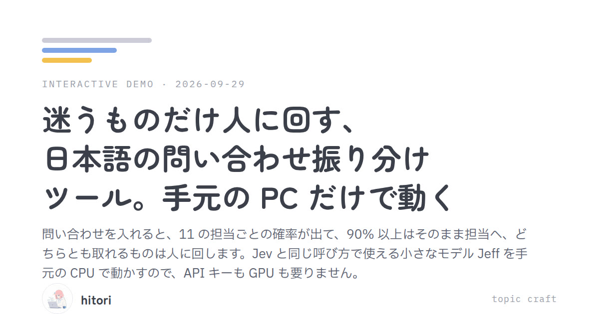
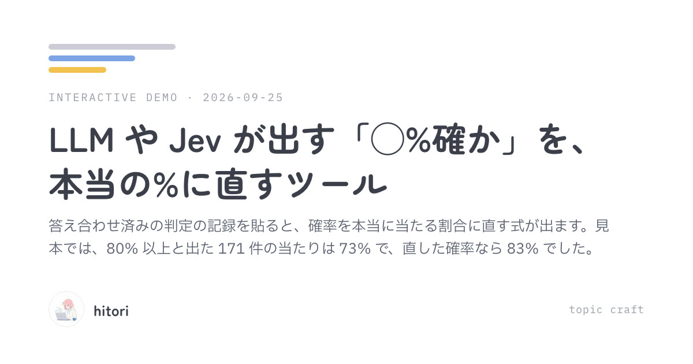

2026-09-29デモAPIキーもGPUもいらない。普通のPCのCPUだけで、日本語の問い合わせを1秒で担当に振り分ける
問い合わせを入れると、11 の担当ごとの確率が出て、90% 以上はそのまま担当へ、どちらとも取れるものは人に回します。Jev と同じ呼び方で使える小さなモデル Jeff を手元の CPU で動かすので、API キーも GPU も要りません。

2026-09-25デモLLM や Jev が出す「◯%確か」を、本当の%に直すツール
答え合わせ済みの判定の記録を貼ると、確率を本当に当たる割合に直す式が出ます。見本では、80% 以上と出た 171 件の当たりは 73% で、直した確率なら 83% でした。
© 2026 hitori · MIT License